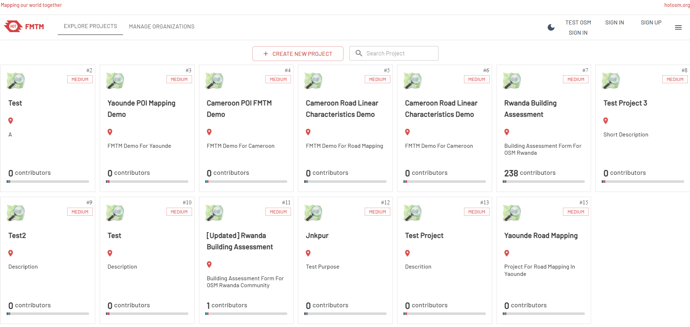

4.2 Utilisation du FMTM pour la collecte de donnée de terrain
Objectifs du cours
Cette section traite de la manière dont le géomètre de terrain utilise le Gestionnaire de tâches de cartographie de terrain au cours de ses activités de cartographie de terrain. À la fin de cette section, vous devriez être en mesure de :
- Apprendre à naviguer sur le site de la FMTM pour télécharger le code QR
Activités d’apprentissage
Le Gestionnaire de Tâche pour la Cartographie de terrain (FMTM) est une plateforme qui aide les gestionnaires de projets à organiser et à gérer les tâches cartographiques. Il assigne ces tâches aux volontaires/enquêteurs et suit leurs progrès.
En tant qu’utilisateur sur le terrain, vous utiliserez abondamment FMTM pour sélectionner la grille, télécharger le code QR et marquer la grille comme effectuée (si vous avez terminé la tâche).
Travailler avec le site de FMTM
- Allez sur fmtm.hotosm.org, vous verrez la liste des projets créés dans FMTM. Pour commencer à travailler sur un projet dans FMTM, vous devez d’abord créer un compt,
- Cliquez sur S’inscrire pour créer un nouveau compte avec votre adresse électronique. Si vous avez déjà un compte, cliquez sur S’identifier

- Sélectionner le projet en cliquant sur la vignette du projet
- Vous serez dirigé vers la page de présentation du projet. Sélectionnez la tâche/grille que Ready veut cartographier

- Prêt signifie que la tâche est disponible pour être mappée
- VERROUILLÉ POUR LA CARTOGRAPHIE signifie que la tâche est déjà cartographiée par un autre volontaire et qu’elle n’est donc pas disponible pour la cartographie
- PRÊT POUR LA VALIDATION signifie que la tâche a été entièrement cartographiée et qu’elle est prête à être validée.
- VERROUILLÉ POUR LA VALIDATION signifie que la tâche a été cartographiée et qu’elle est en cours de validation.
- VALIDÉ signifie que la tâche a été validée avec succès et qu’elle a été entièrement cartographiée sans aucune erreur
- PLUS DE CARTOGRAPHIE NÉCESSAIRE signifie que la tâche n’a pas passé le processus de validation et qu’elle a besoin d’une cartographie plus détaillée
- Après avoir sélectionné la tâche, appuyez sur START MAPPING pour verrouiller la tâche et vous assurer que personne ne travaille sur la même zone que vous.

- Scannez le code QR ou téléchargez le code QR en appuyant sur le bouton de téléchargement en bas à gauche.
- Utilisez le code QR pour commencer à cartographier la tâche sélectionnée à l’aide de l’application ODK Collect sur votre téléphone portable (si vous ne savez pas comment utiliser ODK Collect pour charger le code QR), Veuillez vérifier ce tutoriel
Marquer une tâche comme complète
Une fois l’enquête sur le terrain terminée, vous devez marquer la tâche comme terminée. Pour ce faire, vous devez:
- Allez dans votre zone de projet et sélectionnez la grille que vous avez verrouillée précédemment
- Appuyez sur MARK AS FULLY MAPPED si vous avez déjà terminé la tâche

- Votre grille devient bleue pour indiquer que votre tâche est terminée et prête à être validée.
[Quiz] Testez vos connaissances
Veuillez compléter les informations suivantes concernant le statut de FMTM
| 1 | …… signifie que la tâche n’a pas passé le processus de validation et qu’elle a besoin d’une cartographie plus détaillé |
| 2 | …… signifie que la tâche est déjà cartographiée par un autre volontaire et qu’elle n’est donc pas disponible pour la cartographie |
| 3 | …… signifie que la tâche a été validée avec succès et qu’elle a été entièrement cartographiée sans aucune erreur |
| 4 | …… signifie que la tâche est disponible pour être mappée |
| 5 | …… signifie que la tâche a été cartographiée et qu’elle est en cours de validation |
| 6 | …… signifie que la tâche a été entièrement cartographiée et qu’elle est prête à être validée. |
| Options | |||||
|---|---|---|---|---|---|
| PRÊTE POUR LA VALIDATION | VERROUILLé POUR LA VALIDATION | PRÊT | VERROUILLÉ POUR LA CARTOGRAPHIE | PLUS DE CARTOGRAPHIE NÉCESSAIRE | VALIDé |
Réponses
- PLUS DE CARTOGRAPHIE NÉCESSAIRE
- VERROUILLÉ POUR LA CARTOGRAPHIE
- VALIDÉ
- PRÊT
- VERROUILLÉ POUR LA VALIDATION
- PRÊT POUR LA VALIDATION
Liste de contrôle des activités
À la fin de cette section, vous devriez être en mesure de :
- Naviguer sur le site de FMTM pour sélectionner la grille et télécharger le code QR.